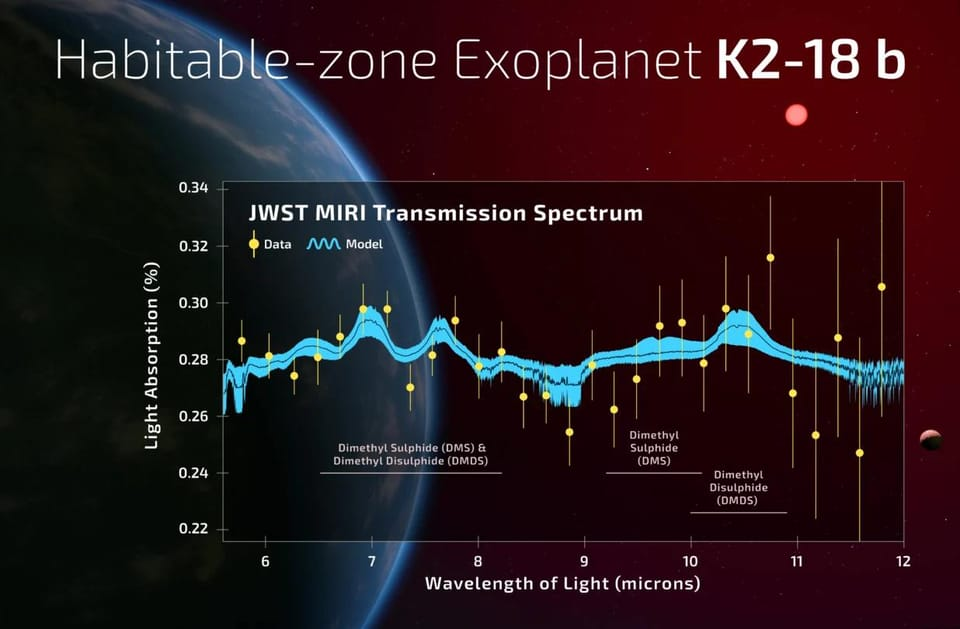

世界苦茶04月17日新闻 | 47条 | 欧盟在贸易战中维持独立

欧盟在贸易战中维持独立 | 英伟达H20出口需要许可 | 订婚强奸案二审维持原判 | 特朗普拒绝出售爱国者给乌克兰
透明茶室
苦茶数据
美元兑人民币：7.30（昨日7.33，前日7.31）
美元兑日元：142.57（昨日142.30，前日143.15）
上证指数：3282（昨日3250，前日3256）
标普500指数：5275（昨日5396，前日5405）
比特币：83958（昨日83429，前日85134）
布伦特原油：66.38（昨日64.12，前日64.96）
中国新闻
• 网信办整治网络“开盒” ：中国搜索引擎百度副总裁谢广军的13岁女儿被指公开他人隐私后，中共中央网信办说，要加大涉“开盒”挂人、非法买卖个人信息等行为举报受理处置力度，营造清朗网络生态。据“网信中国”微信公众号，网信办星期二在河南郑州召开全国网络举报工作会议。会议要求，要突出政治引领，旗帜鲜明，敢于亮剑，时刻保持高度政治敏锐性，增强风险预判预警能力，坚决守牢网络意识形态阵地；要凝聚网络生态举报处置合力，提升涉企网络侵权举报实效，加大涉“开盒”挂人、非法买卖个人信息等违法违规行为举报受理处置力度，积极营造清朗网络生态。 （翻评：我觉得为国家民族大义，抓间谍开盒肯定是可以获得豁免的。）
• 中马关系迈入黄金时代 ：中国国家主席习近平指出，从冠病疫情艰难时期两国的同舟共济，到今天两国团结协作，共建命运共同体，中国和马来西亚的关系正迎来新的黄金时代。《星洲日报》报道，习近平星期三和马来西亚首相安华举行会晤。习近平致开场词时说，中马友好的悠久历史，在命运和文化交融中生长，在互利互惠中巩固。“在风雨同舟中升华，展现了与心相交，以诚相待、以义维持、以和为贵的共同价值追求，体现出两国人民的历史智慧和勇气，是两国共同的宝贵财富，值得我们倍加珍惜。”
• 中马扩大经贸合作 ：中国国家主席习近平与马来西亚首相安华星期三在吉隆坡会晤时表示，双方将加强在贸易、经济和投资领域的合作。路透社报道，在与安华举行双边会谈前，习近平表示，中马关系正步入“新的黄金时代”，他愿意推动双边关系进一步发展。安华则表示，双方将合作领域扩大至包括人工智能在内的多个方向。
• 台独举报专栏收逾3000封邮件 ：中国大陆国台办称，自“台独”打手举报专栏设立后，已收到超3000封举报邮件。国台办星期三上午举行例行新闻发布会。国台办发言人朱凤莲称，推出“‘台独’打手、帮凶迫害台湾同胞恶劣行径举报专栏”，具备坚实的法理基础和充分的法律依据，是顺应两岸民众惩“独”呼声的正义之举，是维护台湾同胞正当权益的必要举措。
• 民进党要求报备赴中行程 ：台湾执政的民进党被曝出多起中国大陆间谍案后，民进党主席、总统赖清德要求民进党党公职人员未来出入境中国大陆、香港和澳门需事前报备、事后报告。综合台湾《上报》《联合报》报道，赖清德星期三在民进党中常会上致辞，近期持续延烧的共谍案成为讲话主轴。赖清德说，台湾检调单位近期发现多名党内人员涉向中国大陆提供机密信息。“这种忘却民进党价值精神、为私利出卖国人的行为，应该受到党纪严惩，以及法律最严厉的制裁，以及社会批判。”
• 美中摩擦波及教育文化 ：美中贸易摩擦持续升级，战线已从关税扩展至教育与文化交流。《纽约时报》报道，中国文化和旅游部及教育部近日先后发出警示，提示中国游客和留学人员，充分评估赴美风险。这是自2021年以来，中国官方首次针对赴美留学发布预警。中国还指控两所美国大学从事网络攻击，并表示将减少引进好莱坞影片。在北京发出警告之际，美国也采取了行动。特朗普政府已撤销部分中国学生和学者的签证。虽然美方称这些措施并非直接因贸易争端而起，但一些保守派已将相关行动与贸易问题挂钩。
• “订婚强奸案”二审维持原判 ：山西省大同市“订婚强奸案”二审维持原判，审判长指出，本案中是否构成强奸罪与当事人是否订婚无关，要用法治思维破除“订婚就有性权利”的错误观念。据人民日报客户端报道，山西省大同市中级人民法院星期三对该案公开宣判，维持一审判决。审判长接受记者采访，就案件引发的关注点，回应社会关切。审判长指出，是否违背妇女意志是强奸罪犯罪构成的关键要素，与双方是否订婚没有关系。综合全案证据，被害人在事前明确表示反对婚前性行为，事中具有明显反抗行为，事后反应强烈，足以认定被告人违背被害人意志，强行与被害人发生了性关系。 （翻评：估计会腥风血雨。）
• 中国发布电池安全新标准 ：中国官方发布“史上最严电池安全令”，升级对电动汽车电池的强制性国家标准，要求电池“不起火、不爆炸”。据《光明日报》报道，中国工业和信息化部组织制定的强制性国家标准《电动汽车用动力蓄电池安全要求》日前发布，将于2026年7月1日起开始实施。报道称，新标准进一步明确待测电池温度要求、上下电状态、观察时间、整车测试条件，技术要求从此前的着火、爆炸前5分钟提供热事件报警信号等，调整为不起火、不爆炸，烟气不对乘员造成伤害等；新增底部撞击测试，考查电池底部受到撞击后的防护能力；新增快充循环后安全测试，300次快充循环后进行外部短路测试，要求不起火、不爆炸等。
亚太印太新闻
• 监督机构称泰国安全部门人肉搜索活动人士： 网络安全研究人员表示，泰国安全部门正在Facebook和X社交平台对民主活动人士进行人肉搜索，敦促其追随者通过恐吓行动骚扰他们。监督组织公民实验室的研究人员在周三发布的一份报告中表示，该国安全部门控制着一个 X 平台账户，该账户已发布超过一百名抗议者的照片。账户据称由一名叫 Juk Khlong Sam的中年女商人运营，目前仍处于活跃状态，并已获得超过11万关注者，经常敦促对照片中人采取行动。研究人员表示几个总计13万关注者的活跃 Facebook 账户采用了相同的策略。目前尚不清楚泰国安全部门如何识别这些活动人士，但公民实验室称他们可能审查了抗议活动的视频和照片。
• 台62名军人持陆居证禁任机密职务 ：台湾国防部通报清查到62名官兵领有中国大陆居住证，不得担任机密职务。综合台湾《联合报》《自由时报》报道，台湾防长顾立雄星期三在立法院通报，截至3月20日，台湾国防部清查发现志愿役、义务役等部队内共有62人领有中国大陆居住证，但没有查出持有定居证、身份证或护照。顾立雄说，对于这些持有大陆居住证的官兵，他们在服役期间不能在情报搜集、资讯通信、航空飞行、舰艇、研发等单位任职，也不能担任新式武器操作手，战情中心、参谋业务等机敏职务。
• 缅甸灾区暴雨阻救援 ：缅甸大地震灾区星期二突发暴雨，无家可归的灾民被淋湿，救援工作陷入停滞。法新社报道，红十字会与红新月会国际联合会说，星期二晚上7时左右的暴雨淹没了曼德勒及其周边地区的街道和帐篷营地。缅甸3月28日发生7.7级地震，造成数千座房屋受损，至少3700人死亡。联合国说，曼德勒约有6万人暂住在帐篷营地。
• 台“罢免潮”纳粹争议引谴责 ：台湾“大罢免”潮如火如荼，有罢免民进党立委的国民党领衔人戴纳粹臂章，比出纳粹敬礼手势，引起德国在台协会、以色列驻台办事处和台湾外交部同声谴责。综合台湾《联合报》《自由时报》和ETToday新闻云报道，国民党青年军、罢免民进党立委李坤城的领衔人宋建梁，因涉嫌伪造连署书遭新北地方检察署侦办，他星期二前往复讯时，戴着纳粹符号“卐”臂章，比出纳粹敬礼手势，手拿希特勒著作《我的奋斗》，行为引起争议。
• 韩警方搜查总统办公室 ：韩国警方星期三对总统办公室内加密电话服务器、总统警卫处办公室和公馆进行搜查取证，以调查前总统尹锡悦和警卫处处长金成勋涉嫌阻碍警方执行拘留一案。韩联社报道，尹锡悦和金成勋因涉嫌阻拦警方和高级公职人员犯罪调查处首次执行尹锡悦拘留令而接受调查。金成勋涉嫌指示删除加密电话记录，违反《总统警卫法》中有关滥用职权的规定。警方还对总统办公室的监控录像进行搜查取证，调查行政安全部前长官李祥敏是否参与发动内乱。李祥敏涉嫌在尹锡悦颁布紧急戒严令时指示切断媒体办公楼的水电。
• 金正恩连续三年未参谒祖陵 ：朝中社星期三报道，朝鲜劳动党政治局常务委员会委员朴泰成、崔龙海和其他党政干部星期二到锦绣山太阳宫参谒，未提及领导人金正恩的消息。4月15日是朝鲜已故领导人金日成诞辰纪念日，又称太阳节。金正恩自2012年掌权，每逢金日成诞辰都会携高级干部前往锦绣山太阳宫参谒。2020年他因冠病大流行首次缺席，2021年和2022年仍携夫人李雪主前往，但自2023年以来已经连续三年没有现身在锦绣山太阳宫。有分析认为，金正恩之前每逢金日成和金正日的诞辰、祭日、建党日等主要节日，都会前往安放金日成和金正日遗体的锦绣山太阳宫参谒，近几年却没有，或意在巩固他本身的权威，同时淡化对祖辈领导人的个人崇拜。
• 柬推“红高棉否认罪”法引争议 ：柬埔寨禁止人们否认红高棉种族灭绝等罪行的法令上个月正式生效。当年的幸存者支持新法，但人权组织担心这会成为政府限制言论及打压异议分子的工具。根据新法，否认红高棉暴政者可被判最高五年监禁。尽管柬政府指此法旨在防止红高棉罪行再次上演，并为受害者伸张正义，但有分析认为，推动立法的前首相洪森试图以此粉饰自己的政治遗产，并压制反对派，尤其是针对他儿子兼继任者洪马内的声音。美国亚利桑那州立大学柬裔学者帕耶说，柬政府试图强化国家叙事，而非鼓励历史问责。“实际上，这可能成为压制异议的工具。”
科技新闻
• 中国人形机器人市场全球占半 ：今年中国人形机器人市场规模预计达82.39亿元人民币，占全球约50%。据中新社报道，为期两天的第二届中国人形机器人与具身智能产业大会星期二在北京开幕。会上发布《2025人形机器人与具身智能产业研究报告》。报告指出，2024年以来，在上下游产业链协同等多重因素推动下，人形机器人产业呈现出技术不断进步与创新、市场规模持续扩大、应用场景不断拓展、政策支持与资本投入加大，以及国际合作与交流加强等发展态势。
• TikTok测试“脚注”功能 ：TikTok正在测试一项新的 “脚注” 功能，其工作方式类似于 X 上的社区笔记。该短视频平台周三宣布，“脚注” 将允许用户为视频添加额外背景和相关信息，以帮助他人更好地理解某些内容，该功能将首先在美国推出。该公司表示，“脚注” 将补充其现有的一系列旨在帮助人们了解内容可靠性的措施，例如内容标签和事实核查项目。该系统的运作方式是允许持不同观点的用户留下脚注，并对其有用性进行投票。脚注只有在被评为 “有用” 后才会对社区可见。此时更广泛的TikTok社区用户也可以对其有用性进行投票。
• 扎克伯格曾考虑剥离Instagram ：Meta首席执行官扎克伯格在2018年曾考虑将Instagram从脸书剥离出去，这在美国联邦贸易委员会针对Meta的反垄断案审判中得到披露。扎克伯格在 2018年5月的一封电子邮件中表示，随着外界要求拆分大型科技公司的呼声越来越高，Meta在未来5到10年内被迫剥离Instagram甚至WhatsApp的可能性并非微不足道。他开始考虑剥离Instagram是否是实现一些重要目标的唯一途径。此次反垄断案的核心是脸书公司在2012年以10亿美元收购Instagram以及在2014年以 190 亿美元收购WhatsApp。FTC 指控Meta垄断社交网络市场，并认为Meta不应该完成这些收购。
• 英伟达H20出口需许可 ：美国人工智能巨头英伟达的H20晶片未来出口至中国将需要获得出口许可，这项限制将令公司损失约55亿美元。综合彭博社和路透社报道，英伟达在星期二提交的一份监管文件说，美国政府星期一通知公司，未来H20晶片出口至中国将需要事先获得美国政府的许可，并指出这项新限制将“无限期”生效。美国官员指出，这项新规旨在应对H20晶片“可能被用于或被转用于中国超级计算机”的担忧。
• 中国网红借TikTok推销直购 ：美国TikTok用户界面正充斥大量中国网红上载的视频，这些视频鼓励美国消费者直接从“世界工厂”中国购买商品，以应对美国总统特朗普加征关税。据彭博社报道，这些视频大多在中国工厂拍摄，这些工厂号称为Lululemon、耐克等美国优质品牌供货。他们中的许多人提供网站网址和联系方式，观众可以直接向这些供应商订购。一位销售奢侈品牌手袋的博主说：“为什么不直接联系我们购买呢？我们能给你的价格低到难以想象。”
• 詹姆斯·韦布空间望远镜的数据显示，名为K2-18 b的行星大气中存在二甲基硫或二甲基二硫的置信度为99.7%： 此类气体在地球上由生物产生。这表明该行星可能拥有微生物生命。但科学家们对结果仍表示谨慎，后续需重复观察确保结果可靠，同时探索是否存在非生物机制能够产生二甲基硫或二甲基二硫。
财经新闻
• 特斯拉暂停中美运输计划 ：美国宣布大幅提高对华关税后，美国电动车巨头特斯拉据报已暂停从中国运输零部件至美国。路透社引述知情人士说，此举可能会扰乱特斯拉的Cybercab无人出租车和Semi电动卡车开发计划。世界首富、特斯拉首席执行官马斯克多次向投资者宣传，这两个项目是推动这家电动车制造商未来增长的重要创新。知情人士说，当美国总统特朗普对中国商品征收34%关税时，特斯拉本已准备好承担上升的成本，但随着关税进一步上调至145%，这已超出公司的承受范围，因此暂停相关运输计划。
• 李成钢任中美贸易谈判代表 ：中国政府星期三发布最新人事任免信息，中国常驻世界贸易组织代表李成钢接替王受文，任正部长级别的中国商务部国际贸易谈判代表，同时兼任商务部副部长。中国人力资源和社会保障部官网星期三发布国务院任免国家工作人员信息，显示李成钢重返商务部，被任命为商务部国际贸易谈判代表兼副部长；王受文则被免去商务部国际贸易谈判代表、副部长职务。这项人事调整时值中美贸易战愈演愈烈。美国总统特朗普4月2日以来不断加码升级对中国的关税战，加上之前因芬太尼问题已加征的20％关税，本届美国政府对华商品加征的关税税率高达145％。此举招致北京反制，将进口自美国的商品关税调高至125％。
• 台立委促查大陆电商行为 ：美国宣布将终止对中国大陆小额包裹的免税待遇后，有台湾立法委员要求严管包括淘宝在内的大陆电商，台湾经济部官员说，淘宝过去有广告与业务登记不符纪录，已开罚并限期改正，若未改正可废止许可，必要时会要求撤资。综合《自由时报》和ETToday新闻云报道，台湾立法院财政委员会星期三邀请财政部、经济部等部会，就“防范中国大陆产品低价倾销及透过台湾洗产地问题之因应策略”进行专题报告，并备质询。民进党立委郭国文在会上说，中国大陆正运用低价倾销方式，将台湾的消费和制造市场“内地化”。他特别点名淘宝以广告公司名义入台营运，以补贴运费方式低价倾销。
• 加拿大准免部分美车进口税 ：加拿大政府星期二宣布一项政策调整，只要汽车制造商继续在加拿大生产汽车，将允许其免关税进口一定数量的美国产轿车和卡车。彭博社报道，这项措施将为那些在安大略省设有汽车装配厂，但仍从美国向加拿大输出大量汽车的公司提供一些帮助。通用汽车公司和斯特兰蒂斯有限公司也将受惠。加拿大政府还将关税减免扩大到另一些关键领域，用于加拿大制造、加工和食品饮料包装的美国进口，以及与公共卫生和国家安全目标相关的某些产品，将获得为期六个月的关税减免。
• 南航中止出售波音飞机 ：中国国有的南方航空公司暂停出售10架二手波音787-8客机，原因是在中美贸易战升级的背景下，中国飞机供应正面临风险。综合澎湃新闻和彭博社报道，南方航空4月3日在上海联合产权交易所公布出售10架787-8飞机及两台GENX-1B70发动机，每架飞机转让底价约3.6亿元人民币至3.8亿元，每台发动机底价约1.5亿元。然而，南航4月11日在交易所发布公告指出，“鉴于存在影响产权交易的事项”，上述交易中止。
• 香港邮政暂停寄美含货邮件 ：针对美国将取消香港小额包裹免税措施并加码提高关税，香港邮政批评美方霸凌无理，会暂停接收寄往美国而内载货品的邮件。香港邮政星期三（在官网发新闻稿说，美方霸凌无理，滥施关税，香港邮政绝不会代收关税，并会暂停接收寄往美国而内载货品的邮件。香港邮政指出，由于平邮的海运时间较长，即日起暂停接收内载货品的平邮邮件，4月27日起暂停接收内载货品的空邮邮件。其他只内载文件而没有货品的邮件则不受影响。
• 英国部长或将访华促经贸 ：英国《卫报》星期二报道，英国商务部长雷诺兹将在今年晚些时候访问中国，以促进两国之间的贸易和投资。当被问及该报道时，雷诺兹办公室说，商业贸易部对英中贸易关系采取“一致且战略性的方针”，但未证实雷诺兹将访华，仅表示他们正与中国在有利于英国国家利益的贸易领域进行接触。《卫报》称，雷诺兹此行旨在重启中英经贸联委会。双方于今年1月同意在适当时间召开中英经贸联委会会议。
• 特朗普下令对矿产调查关税 ：美国总统特朗普下令对所有美国关键矿产进口进行关税调查，这标志着全球贸易战的大幅升级。路透社报道，特朗普星期二下令调查所有美国关键矿产进口可能征收的新关税，此举剑指行业领头羊中国，并进一步加剧他与全球贸易伙伴的争端。制造商、行业顾问和学者等长期以来警告，美国过度依赖中国以及其他国家提供美国整个经济所需要的加工矿产。特朗普星期二在白宫签署行政令，指示商务部长卢特尼克根据1962年《贸易扩展法》第232条款启动一项国家安全调查。
• 敦煌网美区下载量暴涨 ：中美打响关税战后，中国跨境电商平台敦煌网在美国的下载量激增，短短几天时间里跃居苹果应用商店免费排行榜第二名。综合科技网站TechCrunch和第一财经报道，在美国总统特朗普将中国进口商品关税提高至145%后，众多中国外贸商家制作TikTok视频，向消费者解释全球奢侈品市场的实际运作方式。不少商家在视频中说，许多人认为是欧洲制造的服装、手袋和其他配饰，实际上产自中国工厂。报道称，一些人在视频中推荐敦煌网，称其可购买到未贴牌的奢侈品原厂产品，这一趋势直接推动敦煌网的下载量激增。
• 东京在美关税谈判中“手握多张牌”，日本经济顾问表示： 日本饮料巨头三得利控股公司董事长兼首席执行官、新浪实武指出，日本不仅是美国最大的外国投资者，也是美国国债的最大海外持有国。因此，日本应当在谈判中强调进一步投资美国的机遇，并继续持有其庞大的美国国债储备。新浪实武补充道：“我们知道总统非常关心债券市场”，此处所指即美国总统唐纳德·特朗普。
• 欧盟驳回美国关于食品标准与对华关系的要求： 都柏林和布鲁塞尔的高级消息人士称，欧盟不会为了迎合美国农户而对其食品安全法规进行大幅修改，也不会按照美方意愿削弱与中国的关系。这意味着，在特朗普政府加征关税后，欧美达成贸易协议将十分艰难。欧盟执行机构欧盟委员会再次公开强调，欧盟严格的食品安全标准“神圣不可侵犯”，不会成为与美国或任何其他方谈判的内容。
俄乌战争
• 特朗普拟以矿换乌还援助款 ：彭博社星期三引述知情人士称，特朗普政府已将美国向乌克兰提供军事援助的成本估算下调至大约1000亿美元，这个数字更接近乌克兰自己估计的900亿美元。原有估算为3000亿美元。美国总统特朗普正在寻求与乌克兰达成一项双边矿产协议，作为结束俄罗斯在乌克兰战争的和平协议的一部分。特朗普还将矿产协议视为基辅偿还美国数十亿美元军事援助的一种方式，尽管美国对乌克兰的军事援助并非贷款性质。
• 北约称支持乌不可逆转 ：北约秘书长吕特15日说，北约对乌克兰的支持“不容置疑”，但北约从未许诺将乌克兰加入北约写入乌克兰和俄罗斯未来达成的和平协议。乌克兰国际文传电讯社报道，吕特星期二访问乌克兰南部城市敖德萨并与乌总统泽连斯基举行会晤。吕特在与泽连斯基举行的联合记者会上说，北约将一如既往与乌克兰站在一起，北约对乌方的支持“不容置疑”；乌克兰加入北约的进程不可逆转，这是去年在华盛顿举行的北约峰会作出的决定，“一切都没有改变”。
• 俄罗斯出生率降至 200 年来最低： 俄罗斯政府试图通过倡导“传统价值观”、收紧堕胎限制及官员鼓励多子女家庭等政策来提振出生率，但成效不佳。国家统计局 Rosstat 发布的数据显示，2025 年 1–2 月俄罗斯仅出生 195,400 名婴儿，同比下降 3%。2 月单月下降更为明显，同比降幅达 7.6%，仅出生 90,500 名婴儿，比去年同期少 7,400 名。
• 特朗普拒绝向乌克兰提供“爱国者”系统，尽管乌方愿支付 500 亿美元： 美国总统唐纳德·特朗普拒绝了基辅方面通过欧盟资金购买额外爱国者防空系统、总价 500 亿美元的提议，并再次对乌克兰总统泽连斯基提出新指责。乌克兰急需先进防空系统来阻止俄军空袭，而爱国者导弹只由美国生产。乌方提出以每枚 550 万欧元的价格采购数百枚导弹，但遭特朗普回绝。 （翻评：买都不让买？这是为什么？）
其他新闻
• 无神论者已成为德国人数最多的群体。 德国历史上首次出现无神论者（47%）多于天主教和新教信徒总和（45%）的局面。这一下降在巴登-符腾堡、巴伐利亚等南部州尤为显著。
• 以防长称无限期留加沙设缓冲区 ：以色列国防部长卡茨4月16日称，以军将无限期留在加沙、黎巴嫩和叙利亚的所谓安全区，作为“敌人”和以色列社区之间的缓冲区。此举或将进一步使停火和释放人质的谈判复杂化。加沙卫生部门16日称，以色列过去一天对加沙的袭击造成至少22人死亡、89人受伤。巴勒斯坦卫生部16日说，以军当天在约旦河西岸北部杰宁地区打死2名巴勒斯坦年轻男性。以军据报包围了他们躲藏的当地采石场一个洞穴，并向他们开火。以色列警方说，以警方与国家安全总局、以色列国防军联合行动，在杰宁地区一处洞穴与多名武装分子交火，并打死了其中2人。
• 特朗普怒批哈佛教仇恨 ：美国总统特朗普星期三加大力度抨击哈佛大学，称这所学校是个笑话，不值得政府资助。法新社报道，特朗普在Truth Social平台上说：“哈佛甚至不能再被视为一个像样的学习场所，它不应该被列入任何世界一流大学名单。”他说：“哈佛就是个笑话，它教授仇恨和愚蠢，它不应该再接受联邦资金。”
• 英法院裁定女性定义限生理性别 ：英国最高法院裁定，在《2010年平等法》框架下，“女性”一词应依据生理性别界定，因此支持倡议团体提出的上诉请求，跨性别女性将不被纳入该法所保障的“女性”权益范畴。路透社报道，星期三的判决聚焦于跨性别女性在法律层面是否可被视为“女性”并受到反歧视保护。根据英国法律，跨性别者若持有正式的性别承认证书，其性别身份将获得法律认可。但争议在于，是否拥有性别承认证书的跨性别女性可被纳入《平等法》“女性”类别的保护范畴。
• 拜登批特朗普削弱退休保障 ：美国前总统拜登星期二发表卸任后的首次公开讲话，批评特朗普政府疯狂的政府改革，称这种砍刀式改革将危及美国人的退休福利。法新社报道，拜登在伊利诺伊州芝加哥的“残疾人倡导者、顾问和代表”大会致辞时，以“破坏之大、速度之快，令人震惊”概括特朗普上任后的政策影响。拜登在演讲中重点批评了特朗普政府对社会保障局的改革。他说，特朗普上任后迅速裁减了7000名社会保障局员工，包括联邦政府体系出身的资深官员，导致该机构网站崩溃，民众无法登录账户查询福利信息。
• 特朗普政府拟取消联合国维和资金 ：根据路透社看到的特朗普政府内部规划文件，白宫管理和预算办公室以马里、黎巴嫩和刚果的联合国维持和平行动失败为由，提议取消对联合国维和任务的资助。美国是联合国常规预算和维和预算的最大捐助国，占联合国37亿美元核心常规预算的22%，占56亿美元维和预算的27%，这些资金贡献是强制性的。中国为联合国常规预算和维和预算的第二大捐助国。白宫管理和预算办公室拟议的取消维和经费，包含在国务院预算的所谓“回拨”计划中。特朗普政府计划把国务院的预算砍掉一半。
• 法院裁定特朗普政府藐视法庭 ：美国哥伦比亚特区联邦地区法院法官博斯伯格4月16日裁定，特朗普政府违反让航班返回的命令是故意漠视，“存在合理依据”认为政府蔑视法庭。法官仍在决定惩罚措施和可能采取的行动，并给予司法部回应的机会。
• 特朗普亲自阻止了马斯克获得关于中国的秘密简报： 美国国防部长赫格塞斯周二暂停了五角大楼两名高级官员丹·考德威尔和达林·塞尔尼克的职务，以调查是谁泄露了埃隆·马斯克计划举行的有关中国的绝密简报会的消息。马斯克或赫格塞斯并非在泄密事件后自行决定取消该简报会。特朗普总统亲自下令工作人员取消该简报会，一位政府高级官员回忆道，特朗普当时说：“埃隆他妈的在那儿干什么？确保他别去。”这位高级官员补充说，“总统仍然非常喜爱马斯克，但也有一些底线，马斯克在中国有很多生意，关系也很好，这次简报会显然不合适。”马斯克随后仍然与赫格塞斯一起出席了五角大楼的简报会，但移除了关于中国部分的讨论。
• 3 月份往返加美跨境旅行骤减，近 90 万人次未前往美国： 美国海关与边境保护局最新数据显示，今年 3 月经陆路从加拿大进入美国的旅客共 4,105,516 人次，较 2024 年同期的 4,970,360 人次锐减约 17%。观察人士认为，主要原因在于特朗普总统的贸易战、将加拿大嘲讽为“第 51 州”以及一系列抨击加拿大的言论。值得注意的是，2022 年 3 月仍受疫情限制时，加拿大赴美旅客人数反而高于今年同月。
• 美国国务院关闭负责揭露俄中伊虚假信息的办公室： 国务卿马可·鲁比奥周三宣布，关闭原名“全球接触中心”的部门，理由是该中心限制了美国及其他地区的言论自由。长期以来，保守派人士批评该中心点名指认某些媒体和在线账号传播偏颇或不实信息，尤其涉及俄乌战争。鲁比奥表示，政府官员有责任维护公民言论自由，而该中心却“积极压制并审查本应服务的美国人之声音”。